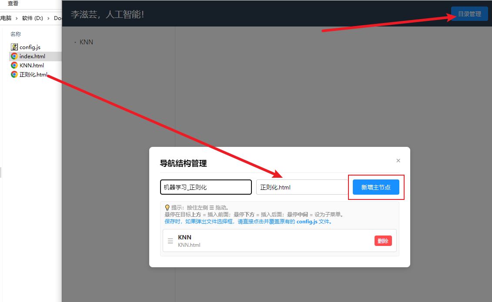
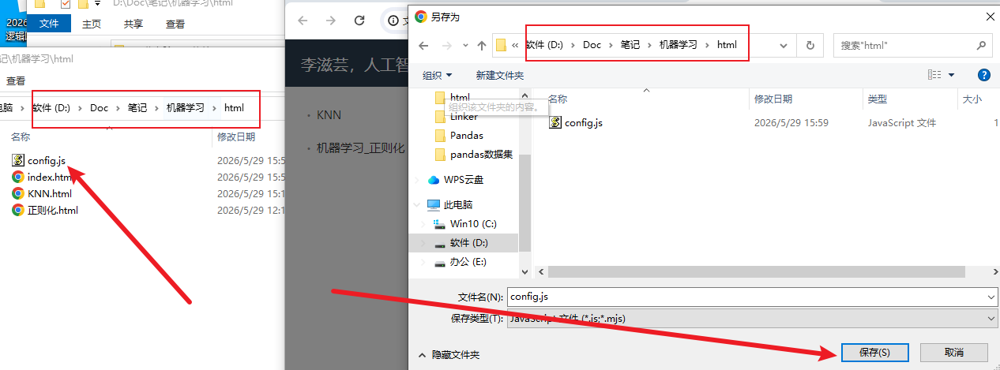

欢迎来到 李滋芸，人工智能！
这是一个纯前端、无后端的轻量级 HTML 笔记网站。作者将会在这里分享自己的人工智能学习笔记。本项目完全开源，支持灵活的目录管理，您可以非常方便地将自己的学习笔记（HTML 文件）上传并挂载到这套左侧树形目录中，打造属于您自己的知识库。
📬 作者联系与开源信息：
当您写好了一篇新的 HTML 笔记（例如 正则化.html），想要将其添加到左侧导航栏时，请按照以下步骤操作：

config.js 文件并点击保存进行替换。
⚠️ 注意：如果不覆盖原文件（比如存成了 config(1).js），则目录变动将不会生效！
刷新页面，即可看到最新添加的笔记目录啦！🎉